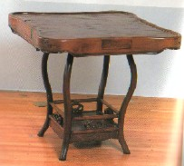

中国古典麻雀では、副露は自分の手牌の前に副露していた。これは中国では縁（へり）の無い雀卓でゲームしていたため、卓の縁（ふち）に副露すると、副露牌が落ちてしまうと云うこと。
それと卓の縁（ふち）に副露すると、副露牌が右腕の蔭になったりする。すると隙（すき）をねらって副露牌をすり替える（   とチーしてあるのを とチーしてあるのを とすりかえて、を手の内で使うなど）イカサマを防止するためである。 とすりかえて、を手の内で使うなど）イカサマを防止するためである。
縁（へり）の無い中国卓

いずれにせよ、手牌の前方に副露するわけであるから、１枚もチーポンが無ければ、自分の門前が清々（すがすが）しい状態ということになる。門前清（メンゼンチン）という用語は、ここから生まれた。
また上海租界で欧米人がゲームしていたときは、自分の左側に副露する方法が行われていた。これは、たぶん縁（へり）のある卓を使っていたからだと思われるが、落牌の危険があっても手牌前方に副露するよりも楽ということだったのか、判然としない。
縁（へり）のある中国卓

いずれにせよ自分の左側に副露したのは、やはりすり替えのイカサマを防止するためだったと思われる（一般には右利きが多いので、左側に副露してあればすり替えしにくい）。
麻雀が日本に伝来したとき、日本ではどこへ副露していたかであるが、昭和３年に出版された麻雀書掲載の写真などを見ると、中国式に手牌の前方に副露されている。そこで伝来当初は、日本でも中国式の副露をしていたと思われる。
「麻雀疑問解答」（中村徳三郎・文芸春秋社）
しかし日本では、最初のプレーヤーが太平洋航路でアメリカと日本、あるいは中国と日本を往来するビジネスマンだったり（当時のエリート階級）した関係から、麻雀はジャンブルというより、上品な中国ゲームとしての認識で普及し始めまた。
上品な中国ゲームと云うことになれば、マナーはやかましく云われるも、“誰かがイカサマするかも知れないからイカサマしにくい場所へ副露しよう”とは考えない。そこで日本では、自然に副露しやすい右側に副露するようになったと思われる。
※数十年前、「上海租界時代には左側に副露していた」というのを、「これが正しい方法」と理解してしまった団体が、その団体で「左副露」を励行したことがあった。もちろんまったく普及しなかったが、さて今はどうなっているのかな....
|